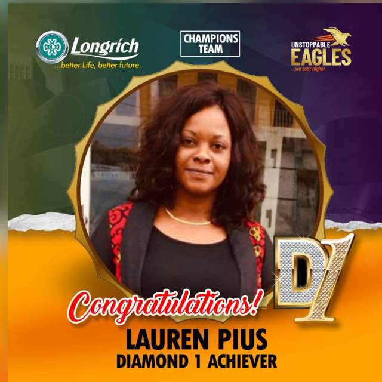

Lauryn Pius earns the Longrich Badge of Honour
She has proven that impossible is nothing in the world of business
The story of her own foray into the Network Business Gig started in 2020 right recently. While the pandemic is freezing the World in cold panic and putting wheels of the world on pause, Lauryn kept her head up determined not to let the current ugly situation of the world hold her down.
Here is what her mentor has to say about her recent milestone achievement in Longrich Network Biz:::
When we say Unstoppable, Ladies and Gentlemen, Honourable Members, come and see the definition right here. I want to elaborate more about this amiable woman. But no time and space here to do so! Immediately she said YES... NOTHING STOPS HER... Until she achieved it. It's like a dream to me. In just 2 weeks and 3 days she smashed the Diamond Rank Levels. Overtaking is allowed... CONGRATULATIONS.
I know she will one day be a Star Director in this Business Platform! Ladies and Gentlemen with a standing ovation, join me as we celebrate Mrs. Lauren Pius. She is amazing. A woman with a difference. Networker to the core! Accredited Longricher.
Back then in school, she was so quiet. Never knew she is this active. Really, Network marketing brings out the best in you! Am so excited, am speechless... Let me leave the storyline today, Diamond II Levels, CNN go see us LIVE...
Congratulations... Unstoppable!